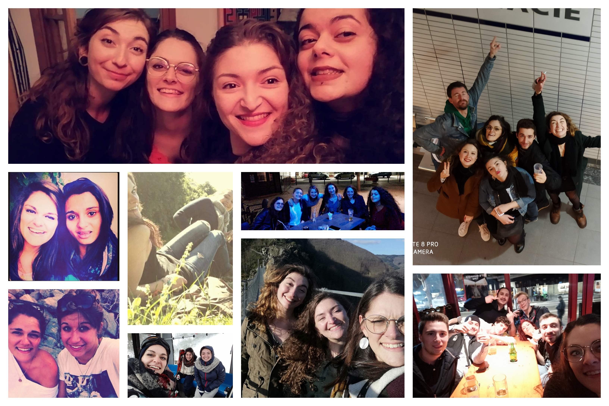

Le voyage est un grand centre d'intérêt pour moi. En effet, j'adore découvrir
de nouveaux paysages, de nouvelles cultures et également de nouvelles aventures. A ce jour,
j'ai eu la chance de visiter plusieurs pays d'Europe. J'ai visité le nord de l'Espagne, j'ai adoré
ses paysages qui entremèlent montagne et mer. J'ai également eu la chance de visiter l'Ecosse dans
le cadre d'un voyage scolaire en classe de terminale. Nous avons été accueillis par des familles écossaises
ce qui nous a permis de nous plonger pleinement dans cette culture. Aussi, j'ai eu l'occasion d'améliorer mes
compétences en anglais. Enfin, il y a peu, j'ai visité la Croatie. J'ai eu la chance de faire une sorte de road
trip qui m'a permis de découvrir ce pays du sud au nord. J'ai découvert de très jolies paysages ainsi qu'une
culture merveilleuse et des personnes très accueillantes.
J'ai encore pleins de projets de voyages, mon rêve serai de découvrir l'Asie ainsi que l'Amérique du
Sud. J'espère repartir très vite vers de nouvelles aventures... 🛫
La musique est un de mes principaux centres d'intérêts. En effet, elle fait partie intégrante
de mon quotidien. J'adore écoutais la musique lors de mes nombreux trajets en transport en commun.
Aussi, je trouve que cela est très distrayant et permet de voir passer le trajet plus vite.
J'écoute beaucoup de musiques différentes, j'aime un peu tous les styles et j'adore découvrir
de nouveaux artistes.
J'ai une préférence pour la musique techno. En effet, j'écoute beaucoup d'artistes qualifiés
de "underground". J'ai eu la chance d'en voir plusieurs en concert à Toulouse dans plusieurs
salles de concerts toulousaines (le Bikini, ...).
Outre, la musique techno, je suis une grande fan de Céline Dion. Il est vrai que c'est un peu
surprenant car ça ne ressemble pas beaucoup au style techno mais comme je le disais tout à l'heure,
j'aime vraiment tous styles de musique. J'aime tous les albums de Céline Dion mais ma chanson
préférée est içi
Lorsque j'ai appris qu'elle venait faire une tournée en France (sa dernière), j'ai desuite sauté
sur l'occasion pour acheter des places pour aller la voir. Je vais donc aller la voir le 3 Juillet
prochain à Paris.
Du fait de mon goût pour la musique, je chante souvent et casse les oreilles
de mon entourage.
Ma chanson du moment 🎧
La nature est pour moi un centre d'interêt car j'adore ce qu'elle nous offre et suis soucieuse de son sort. En effet, j'essais de plus en plus et à mon échelle bien évidemment de changer les choses. J'essais d'adopter un mode de vie générant le moins de déchêts possible et de prendre les transports en commun le plus souvent. Etant née dans un petit village de campagne de l'Hérault, j'évolue depuis toute petite dans un cadre de vie magnifique. C'est pour cela qu'il est important pour moi de préserver ces endroits "sauvages" et notre planète pour les générations futures. J'aime beaucoup faire des randonnées ou des promenades dans la nature et aussi découvrir de nouveaux endroits afin de profiter du paysage que nous offre dame nature. J'ai réalisé de nombreuses fois des sensibilations pour des enfants sur le recyclage et le tri des déchêts et j'ai également participé moi-même à des actions de nettoyage de la nature. Et comme dirai Goerge Sand "La nature est tout ce qu'on voit, tout ce qu'on veut, tout ce qu'on aime."
♻ 🌍 ♻ 🌍 ♻ 🌍 ♻ 🌍 ♻
Mes amis sont également un centre d'intérêt dans ma vie car ils sont beaucoup présents. En effet, j'essais de les voir le plus souvent possible lors de repas, d'après-midis ou de soirées. Cela est très important pour moi car leur compagnie est un réel bol d'air frais. Nous ne vivons pas tous dans la même ville mais nous essayons de nous réunir le plus souvent possible Malgrè mon jeune âge, j'ai des amies de longue date et cela permet de lier des liens très forts Comme on dit, on ne choisit pas sa famille mais on choisit ses amis pour former une deuxième famille... 
J'aime beaucoup pratiquer de l'activité sportive. En effet, je fais du sport depuis que je suis toute
petite, cela m'a permis de tester plusiseurs sports. J'ai commencé par tester la GRS (Gymnastique
Rythmique au Sol), j'ai notamment pratiqué le ruban pendant 2 années scolaires. Ensuite, j'ai pratiqué
la danse classique pendant 1 an mais cela ne m'a pas beaucoup plu.
Ensuite, durant toute ma période collégienne, j'ai pratiqué le rugby. Ce sport m'a vraiment plu et
m'a inculqué des valeurs de partages et un fort esprit d'équipe.Cependant, suite à une mauvaise expérience
dû à un plaquage trop haut, j'ai arrêté de pratiquer ce sport.
Durant, ma période lycéenne, j'ai pratiqué le handball. Ce sport m'a également beaucoup plus. Nous avons
participé à de nombreux championnats, cela a été une belle expérience pour moi.
Après cette période, j'ai arrêté le sport dû à mon arrivée à Toulouse, mais depuis peu, je me suis
inscrite dans une salle de sport afin de rester en forme et de pratiquer une activité physique 2 fois
par semaine.
La pâtisserie est une réelle passion pour moi. J'adore réaliser des gâteaux de toutes sortes J'aime également me lancer des défis en réalisant par exemple des pâtisseries que je n'ai jamais réalisé auparavant. Mon plus grand défis à ce jour a été de réaliser une pièce montée de macaron. Cela a plutôt été une réussite. Le gâteau que je préfère réaliser est le bavarois à la framboise. Voici la recette que j'utilise : 🧾